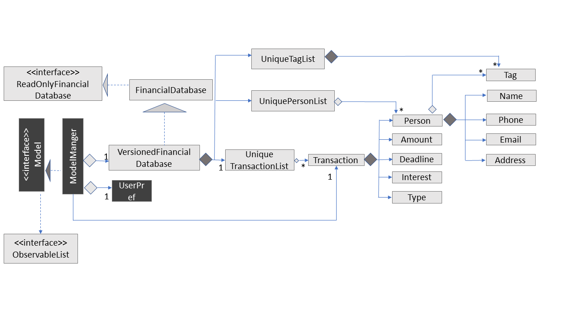

By: W12-2 Since: September 2018 Licence: MIT
1. Setting up
1.1. Prerequisites
-
JDK
9or laterJDK 10on Windows will fail to run tests in headless mode due to a JavaFX bug. Windows developers are highly recommended to use JDK9. -
IntelliJ IDE
IntelliJ by default has Gradle and JavaFx plugins installed.
Do not disable them. If you have disabled them, go toFile>Settings>Pluginsto re-enable them.
1.2. Setting up the project in your computer
-
Fork this repo, and clone the fork to your computer
-
Open IntelliJ (if you are not in the welcome screen, click
File>Close Projectto close the existing project dialog first) -
Set up the correct JDK version for Gradle
-
Click
Configure>Project Defaults>Project Structure -
Click
New…and find the directory of the JDK
-
-
Click
Import Project -
Locate the
build.gradlefile and select it. ClickOK -
Click
Open as Project -
Click
OKto accept the default settings -
Open a console and run the command
gradlew processResources(Mac/Linux:./gradlew processResources). It should finish with theBUILD SUCCESSFULmessage.
This will generate all resources required by the application and tests. -
Open
XmlAdaptedTransaction.javaandMainWindow.javaand check for any code errors-
Due to an ongoing issue with some of the newer versions of IntelliJ, code errors may be detected even if the project can be built and run successfully
-
To resolve this, place your cursor over any of the code section highlighted in red. Press ALT+ENTER, and select
Add '--add-modules=…' to module compiler optionsfor each error
-
-
Repeat this for the test folder as well (e.g. check
XmlUtilTest.javaandHelpWindowTest.javafor code errors, and if so, resolve it the same way)
1.3. Verifying the setup
-
Run the
seedu.address.MainAppand try a few commands -
Run the tests to ensure they all pass.
1.4. Configurations to do before writing code
1.4.1. Configuring the coding style
This project follows oss-generic coding standards. IntelliJ’s default style is mostly compliant with ours but it uses a different import order from ours. To rectify,
-
Go to
File>Settings…(Windows/Linux), orIntelliJ IDEA>Preferences…(macOS) -
Select
Editor>Code Style>Java -
Click on the
Importstab to set the order-
For
Class count to use import with '*'andNames count to use static import with '*': Set to999to prevent IntelliJ from contracting the import statements -
For
Import Layout: The order isimport static all other imports,import java.*,import javax.*,import org.*,import com.*,import all other imports. Add a<blank line>between eachimport
-
Optionally, you can follow the UsingCheckstyle.adoc document to configure Intellij to check style-compliance as you write code.
1.4.2. Updating documentation to match your fork
After forking the repo, the documentation will still have the SE-EDU branding and refer to the CS2103-AY1819S1-W12-2/main repo.
If you plan to develop this fork as a separate product (i.e. instead of contributing to CS2103-AY1819S1-W12-2/main), you should do the following:
-
Configure the site-wide documentation settings in
build.gradle, such as thesite-name, to suit your own project. -
Replace the URL in the attribute
repoURLinDeveloperGuide.adocandUserGuide.adocwith the URL of your fork.
1.4.3. Setting up CI
Set up Travis to perform Continuous Integration (CI) for your fork. See UsingTravis.adoc to learn how to set it up.
After setting up Travis, you can optionally set up coverage reporting for your team fork (see UsingCoveralls.adoc).
| Coverage reporting could be useful for a team repository that hosts the final version but it is not that useful for your personal fork. |
Optionally, you can set up AppVeyor as a second CI (see UsingAppVeyor.adoc).
| Having both Travis and AppVeyor ensures your App works on both Unix-based platforms and Windows-based platforms (Travis is Unix-based and AppVeyor is Windows-based) |
1.4.4. Getting started with coding
When you are ready to start coding,
-
Get some sense of the overall design by reading Section 2.1, “Architecture”.
-
Take a look at [GetStartedProgramming].
2. Design
2.1. Architecture

The Architecture Diagram given above explains the high-level design of the App. Given below is a quick overview of each component.
The .pptx files used to create diagrams in this document can be found in the diagrams folder. To update a diagram, modify the diagram in the pptx file, select the objects of the diagram, and choose Save as picture.
|
Main has only one class called MainApp. It is responsible for,
-
At app launch: Initializes the components in the correct sequence, and connects them up with each other.
-
At shut down: Shuts down the components and invokes cleanup method where necessary.
Commons represents a collection of classes used by multiple other components. Two of those classes play important roles at the architecture level.
-
EventsCenter: This class (written using Google’s Event Bus library) is used by components to communicate with other components using events (i.e. a form of Event Driven design) -
LogsCenter: Used by many classes to write log messages to the App’s log file.
The rest of the App consists of four components.
Each of the four components
-
Defines its API in an
interfacewith the same name as the Component. -
Exposes its functionality using a
{Component Name}Managerclass.
For example, the Logic component (see the class diagram given below) defines it’s API in the Logic.java interface and exposes its functionality using the LogicManager.java class.
Events-Driven nature of the design
The Sequence Diagram below shows how the components interact for the scenario where the user issues the command delete 1.
delete 1 command (part 1)
Note how the Model simply raises a FinancialDatabaseChangedEvent when the Address Book data are changed, instead of asking the Storage to save the updates to the hard disk.
|
The diagram below shows how the EventsCenter reacts to that event, which eventually results in the updates being saved to the hard disk and the status bar of the UI being updated to reflect the 'Last Updated' time.
delete 1 command (part 2)
Note how the event is propagated through the EventsCenter to the Storage and UI without Model having to be coupled to either of them. This is an example of how this Event Driven approach helps us reduce direct coupling between components.
|
The sections below give more details of each component.
2.2. UI component

API : Ui.java
The UI consists of a MainWindow that is made up of parts e.g.CommandBox, ResultDisplay, PersonListPanel, StatusBarFooter, BrowserPanel etc. All these, including the MainWindow, inherit from the abstract UiPart class.
The UI component uses JavaFx UI framework. The layout of these UI parts are defined in matching .fxml files that are in the src/main/resources/view folder. For example, the layout of the MainWindow is specified in MainWindow.fxml
The UI component,
-
Executes user commands using the
Logiccomponent. -
Binds itself to some data in the
Modelso that the UI can auto-update when data in theModelchange. -
Responds to events raised from various parts of the App and updates the UI accordingly.
2.3. Logic component
API :
Logic.java
-
Logicuses theFinancialDatabaseParserclass to parse the user command. -
This results in a
Commandobject which is executed by theLogicManager. -
The command execution can affect the
Model(e.g. adding a transaction) and/or raise events. -
The result of the command execution is encapsulated as a
CommandResultobject which is passed back to theUi.
Given below is the Sequence Diagram for interactions within the Logic component for the execute("delete 1") API call.

delete 1 Command2.4. Model component

API : Model.java
The Model,
-
stores a
UserPrefobject that represents the user’s preferences. -
stores the Debt Tracker data.
-
exposes an unmodifiable
ObservableList<Person>that can be 'observed' e.g. the UI can be bound to this list so that the UI automatically updates when the data in the list change. -
does not depend on any of the other three components.
As a more OOP model, we can store a Tag list in Debt Tracker, which Person can reference. This would allow Address Book to only require one Tag object per unique Tag, instead of each Person needing their own Tag object. An example of how such a model may look like is given below. |
2.5. Storage component

API : Storage.java
The Storage component,
-
can save
UserPrefobjects in json format and read it back. -
can save the Debt Tracker data in xml format and read it back.
2.6. Common classes
Classes used by multiple components are in the seedu.FinancialDatabase.commons package.
3. Implementation
This section describes some noteworthy details on how certain features are implemented.
3.1. Undo/Redo feature
3.1.1. Current Implementation
The undo/redo mechanism is facilitated by VersionedFinancialDatabase.
It extends FinancialDatabase with an undo/redo history, stored internally as an financialDatabaseStateList and currentStatePointer.
Additionally, it implements the following operations:
-
VersionedFinancialDatabase#commit()— Saves the current financial database state in its history. -
VersionedFinancialDatabase#undo()— Restores the previous financial database state from its history. -
VersionedFinancialDatabase#redo()— Restores a previously undone financial database state from its history.
These operations are exposed in the Model interface as Model#commitFinancialDatabase(), Model#undoFinancialDatabase() and Model#redoFinancialDatabase() respectively.
Given below is an example usage scenario and how the undo/redo mechanism behaves at each step.
Step 1. The user launches the application for the first time. The VersionedFinancialDatabase will be initialized with the initial address book state, and the currentStatePointer pointing to that single address book state.
Step 2. The user executes delete 5 command to delete the 5th transaction in the financial database. The delete command calls Model#commitFinancialDatabasek(), causing the modified state of the address book after the delete 5 command executes to be saved in the addressBookStateList, and the currentStatePointer is shifted to the newly inserted address book state.
Step 3. The user executes add n/David … to add a new transaction. The add command also calls Model#commitFinancialDatabase(), causing another modified address book state to be saved into the FinancialDatabaseStateList.
If a command fails its execution, it will not call Model#commitFinancialDatabase(), so the financial database state will not be saved into the financialDatabaseStateList.
|
Step 4. The user now decides that adding the transaction was a mistake, and decides to undo that action by executing the undo command. The undo command will call Model#undoFinancialDatabase(), which will shift the currentStatePointer once to the left, pointing it to the previous address book state, and restores the address book to that state.
If the currentStatePointer is at index 0, pointing to the initial financial database state, then there are no previous financial database states to restore. The undo command uses Model#canUndoFinancialDatabase() to check if this is the case. If so, it will return an error to the user rather than attempting to perform the undo.
|
The following sequence diagram shows how the undo operation works:
The redo command does the opposite — it calls Model#redoFinancialDatabase(), which shifts the currentStatePointer once to the right, pointing to the previously undone state, and restores the financial database to that state.
If the currentStatePointer is at index FinancialDatabaseStateList.size() - 1, pointing to the latest financial database state, then there are no undone address book states to restore. The redo command uses Model#canRedoFinancialDatabase() to check if this is the case. If so, it will return an error to the user rather than attempting to perform the redo.
|
Step 5. The user then decides to execute the command list. Commands that do not modify the financial database, such as list, will usually not call Model#commitFinancialDatabase(), Model#undoFinancialDatabase() or Model#redoFinancialDatabase(). Thus, the financialDatabaseStateList remains unchanged.

Step 6. The user executes clear, which calls Model#commitFinancialDatabase(). Since the currentStatePointer is not pointing at the end of the financialDatabaseStateList, all address book states after the currentStatePointer will be purged. We designed it this way because it no longer makes sense to redo the add n/David … command. This is the behavior that most modern desktop applications follow.
The following activity diagram summarizes what happens when a user executes a new command:

3.1.2. Design Considerations
Aspect: How undo & redo executes
-
Alternative 1 (current choice): Saves the entire address book.
-
Pros: Easy to implement.
-
Cons: May have performance issues in terms of memory usage.
-
-
Alternative 2: Individual command knows how to undo/redo by itself.
-
Pros: Will use less memory (e.g. for
delete, just save the transaction being deleted). -
Cons: We must ensure that the implementation of each individual command are correct.
-
Aspect: Data structure to support the undo/redo commands
-
Alternative 1 (current choice): Use a list to store the history of financial database states.
-
Pros: Easy for new Computer Science student undergraduates to understand, who are likely to be the new incoming developers of our project.
-
Cons: Logic is duplicated twice. For example, when a new command is executed, we must remember to update both
HistoryManagerandVersionedFinancialDatabase.
-
-
Alternative 2: Use
HistoryManagerfor undo/redo-
Pros: We do not need to maintain a separate list, and just reuse what is already in the codebase.
-
Cons: Requires dealing with commands that have already been undone: We must remember to skip these commands. Violates Single Responsibility Principle and Separation of Concerns as
HistoryManagernow needs to do two different things.
-
3.2. Logging
We are using java.util.logging package for logging. The LogsCenter class is used to manage the logging levels and logging destinations.
-
The logging level can be controlled using the
logLevelsetting in the configuration file (See Section 3.3, “Configuration”) -
The
Loggerfor a class can be obtained usingLogsCenter.getLogger(Class)which will log messages according to the specified logging level -
Currently log messages are output through:
Consoleand to a.logfile.
Logging Levels
-
SEVERE: Critical problem detected which may possibly cause the termination of the application -
WARNING: Can continue, but with caution -
INFO: Information showing the noteworthy actions by the App -
FINE: Details that is not usually noteworthy but may be useful in debugging e.g. print the actual list instead of just its size
3.3. Configuration
Certain properties of the application can be controlled (e.g App name, logging level) through the configuration file (default: config.json).
4. Documentation
We use asciidoc for writing documentation.
| We chose asciidoc over Markdown because asciidoc, although a bit more complex than Markdown, provides more flexibility in formatting. |
4.1. Editing Documentation
See UsingGradle.adoc to learn how to render .adoc files locally to preview the end result of your edits.
Alternatively, you can download the AsciiDoc plugin for IntelliJ, which allows you to preview the changes you have made to your .adoc files in real-time.
4.2. Publishing Documentation
See UsingTravis.adoc to learn how to deploy GitHub Pages using Travis.
4.3. Converting Documentation to PDF format
We use Google Chrome for converting documentation to PDF format, as Chrome’s PDF engine preserves hyperlinks used in webpages.
Here are the steps to convert the project documentation files to PDF format.
-
Follow the instructions in UsingGradle.adoc to convert the AsciiDoc files in the
docs/directory to HTML format. -
Go to your generated HTML files in the
build/docsfolder, right click on them and selectOpen with→Google Chrome. -
Within Chrome, click on the
Printoption in Chrome’s menu. -
Set the destination to
Save as PDF, then clickSaveto save a copy of the file in PDF format. For best results, use the settings indicated in the screenshot below.

4.4. Site-wide Documentation Settings
The build.gradle file specifies some project-specific asciidoc attributes which affects how all documentation files within this project are rendered.
Attributes left unset in the build.gradle file will use their default value, if any.
|
| Attribute name | Description | |
|---|---|---|
Default value |
|
The name of the website. If set, the name will be displayed near the top of the page. |
not set |
|
URL to the site’s repository on GitHub. Setting this will add a "View on GitHub" link in the navigation bar. |
not set |
|
Define this attribute if the project is an official SE-EDU project. This will render the SE-EDU navigation bar at the top of the page, and add some SE-EDU-specific navigation items. |
4.5. Per-file Documentation Settings
Each .adoc file may also specify some file-specific asciidoc attributes which affects how the file is rendered.
Asciidoctor’s built-in attributes may be specified and used as well.
Attributes left unset in .adoc files will use their default value, if any.
|
| Attribute name | Description | Default value |
|---|---|---|
|
Site section that the document belongs to.
This will cause the associated item in the navigation bar to be highlighted.
One of: * Official SE-EDU projects only |
not set |
|
Set this attribute to remove the site navigation bar. |
not set |
4.6. Site Template
The files in docs/stylesheets are the CSS stylesheets of the site.
You can modify them to change some properties of the site’s design.
The files in docs/templates controls the rendering of .adoc files into HTML5.
These template files are written in a mixture of Ruby and Slim.
|
Modifying the template files in |
5. Testing
5.1. Running Tests
There are three ways to run tests.
| The most reliable way to run tests is the 3rd one. The first two methods might fail some GUI tests due to platform/resolution-specific idiosyncrasies. |
Method 1: Using IntelliJ JUnit test runner
-
To run all tests, right-click on the
src/test/javafolder and chooseRun 'All Tests' -
To run a subset of tests, you can right-click on a test package, test class, or a test and choose
Run 'ABC'
Method 2: Using Gradle
-
Open a console and run the command
gradlew clean allTests(Mac/Linux:./gradlew clean allTests)
| See UsingGradle.adoc for more info on how to run tests using Gradle. |
Method 3: Using Gradle (headless)
Thanks to the TestFX library we use, our GUI tests can be run in the headless mode. In the headless mode, GUI tests do not show up on the screen. That means the developer can do other things on the Computer while the tests are running.
To run tests in headless mode, open a console and run the command gradlew clean headless allTests (Mac/Linux: ./gradlew clean headless allTests)
5.2. Types of tests
We have two types of tests:
-
GUI Tests - These are tests involving the GUI. They include,
-
System Tests that test the entire App by simulating user actions on the GUI. These are in the
systemtestspackage. -
Unit tests that test the individual components. These are in
seedu.address.uipackage.
-
-
Non-GUI Tests - These are tests not involving the GUI. They include,
-
Unit tests targeting the lowest level methods/classes.
e.g.seedu.address.commons.StringUtilTest -
Integration tests that are checking the integration of multiple code units (those code units are assumed to be working).
e.g.seedu.address.storage.StorageManagerTest -
Hybrids of unit and integration tests. These test are checking multiple code units as well as how the are connected together.
e.g.seedu.address.logic.LogicManagerTest
-
5.3. Troubleshooting Testing
Problem: HelpWindowTest fails with a NullPointerException.
-
Reason: One of its dependencies,
HelpWindow.htmlinsrc/main/resources/docsis missing. -
Solution: Execute Gradle task
processResources.
6. Dev Ops
6.1. Build Automation
See UsingGradle.adoc to learn how to use Gradle for build automation.
6.2. Continuous Integration
We use Travis CI and AppVeyor to perform Continuous Integration on our projects. See UsingTravis.adoc and UsingAppVeyor.adoc for more details.
6.3. Coverage Reporting
We use Coveralls to track the code coverage of our projects. See UsingCoveralls.adoc for more details.
6.4. Documentation Previews
When a pull request has changes to asciidoc files, you can use Netlify to see a preview of how the HTML version of those asciidoc files will look like when the pull request is merged. See UsingNetlify.adoc for more details.
6.5. Making a Release
Here are the steps to create a new release.
-
Update the version number in
MainApp.java. -
Generate a JAR file using Gradle.
-
Tag the repo with the version number. e.g.
v0.1 -
Create a new release using GitHub and upload the JAR file you created.
6.6. Managing Dependencies
A project often depends on third-party libraries. For example, Debt Tracker depends on the Jackson library for XML parsing. Managing these dependencies can be automated using Gradle. For example, Gradle can download the dependencies automatically, which is better than these alternatives.
a. Include those libraries in the repo (this bloats the repo size)
b. Require developers to download those libraries manually (this creates extra work for developers)
Appendix A: Instructions for Manual Testing
Given below are instructions to test the app manually.
A.1. Launch and Shutdown
-
Initial launch
-
Download the jar file and copy into an empty folder
-
Double-click the jar file
Expected: Shows the GUI with a set of sample transactions. The window size may not be optimum.
-
-
Saving window preferences
-
Resize the window to an optimum size. Move the window to a different location. Close the window.
-
Re-launch the app by double-clicking the jar file.
Expected: The most recent window size and location is retained.
-
A.2. Deleting a transaction
Deletes a transaction while all transactions are listed
-
Prerequisite: There must be at least one transaction in the database.
-
Test case:
delete 1
Expected: First transaction is deleted from the list. Details of the deleted transaction shown in the status message. Timestamp in the status bar is updated. -
Test case:
delete 0
Expected: No transaction is deleted. Error details shown in the status message. Status bar remains the same. -
Other incorrect delete commands to try:
delete,delete x(where x is larger than the list size) {give more}
Expected: Similar to previous.
A.3. Adding a Profile Image
-
Prerequisite: The Profile Image should not exceed 10MB.
-
Advantage: It would prevent user from uploading large files as the application may be unstable.
-
Prerequisities: You have a png image that is less than 10MB at Users folder.
TestCase:uploadphoto 3 up/Users/xiaoyeong.png
Expected: Your Profile Picture will be displayed.
-
-
This is the
sequence diagramfor theupdatephotocommand
-
The user executes the
updatephoto INDEX up/FILEPATHcommand, with parametersINDEXandFILEPATH -
The
FinancialDatabaseParserclass parses the command and create a newUploadPhotoCommandclass. -
New
Photoobject is created, which contain the image referenced byFILEPATH. …If the FILEPATH’s is invalid or equals to 'delete', it will display the default picture. -
The new
Photois attached to theTransactionatINDEX -
The new photo is displayed and updated
A.4. Marking transactions as paid
-
Prerequisite: The index the user keyed in must have a valid transaction at that numbered entry in the transactions list under the Current Transactions tab.
-
Test cases:
-
Input:
paid 1
Output: If the transactions list under the Current Transactions tab is at least 3 entries long, the third transaction from that list is deleted, and added to the transactions list under the Past Transactions tab. -
Input:
paid x(where x is larger than the list size)
Output: Error details (showing an invalid index was keyed in) will be shown in the results display.
-
A.5. Filtering transactions
-
Prerequisite: Command input must adhere strictly to specified format
-
Test cases:
-
Input:
filter n/alex e/example.com
Output: Lists all transactions with name 'alex' with an 'example.com' email -
Input:
filter tdmin/10/11/2018 tdmax/14/12/2018
Output: Lists all transactions with deadline between 10/11/2018 and 14/12/2018 -
Input:
filter n/alex e/example.com and/ or/Output: Command fails. Error details shown in the results display. -
Inputs:
filter,filter n/;;,filter or/Output: Error details shown in the results display (same as above).
-
A.6. Using the Google Calendar service
-
Logging in with a Google account
-
Enter
calendar logininto the command box. -
Browser will launch with an authentication prompt.
-
Enter your Google account details for authentication. There are three possible options for this:
-
Use an existing Google account
-
Create a new Google account for testing
-
Login with the provided test account (not recommended):
Username: debttracker2103@gmail.com Password: 2103testaccount
-
Use of the provided test account is not recommended as it may produce unexpected results when viewing/syncing the calendar data due to the possibility of concurrent users. Only use if you do not have access to and are unable to create a new Google account.
-
-
-
-
Viewing the Calendar
-
Enter
calendar showin the command box to view the Google calendar in-app.
-
-
Syncing the Calendar
-
Calendar data is synced automatically when entering a command that modifies the debt tracker data.
-
To perform a manual sync in cases where the calendar data is not in sync with the debt tracker app, enter
calendar syncinto the command box.
-
A.7. Converting currencies
Converting the amounts of all the transactions in the database to their respective amounts in the base currency, Singapore Dollars.
-
Prerequisites:
-
The application must have an internet connection.
-
All the amounts in the transaction are valid.
-
-
Test case:
-
Input:
convert,convert x(x is any random input)
Output: The amounts in all the transactions conducted in foreign currencies will converted to Singapore Dollars.
-
A.8. Calculating interest
Calculates the interest on all the transaction amounts based on the provided monthly interest rate
(which is capped at a maximum of 4.00%), following either the simple or compound interest scheme.
-
Prerequisite: All the transactions in the database have a valid amount.
-
Test cases:
-
Inputs:
interest simple 1.00%,interest SIMPLE 1.00%,interest Simple 1.00%
Output: Those transactions whose deadline is more than a month have their amounts incremented by the interest amount. -
Input:
interest sample 1.00%
Output: Error message is shown in the results display due to the wrongly entered interest scheme. -
Input:
interest simple 1.0%,interest simple 1.000%,interest simple 1Output: Error message is shown in the results display because the interest rate is formatted incorrectly.
-
A.9. Sorting transactions
Sorts all the transactions based on transaction amount, transaction type or transaction deadline if the respective parameters are provided. Otherwise, the transactions are sorted in alphabetical ordering of the person’s name and the tie is broken using the person’s email or phone number.
-
Prerequisites:
-
All the transactions are converted to the base currency using the
convertcommand. -
All the attributes of the transaction are valid.
-
-
Test cases:
-
Input:
sort amount
Output: All the transactions are sorted in the descending order of amount values. -
Input:
sort type
Output: All the transactions are sorted in the alphabetical ordering of the types i.e. the debts come before the loans. -
Input:
sort deadline
Output: All the transactions are sorted from the earliest to the latest deadlines. -
Input:
sort,sort x(where x is any random input)
Output: All the transactions are sorted in alphabetical order of the person names, with tie broken using the person’s email or phone number.
-
Appendix B: User Stories
Priorities: High (should have)
Medium (would like to have)
Low (unlikely to have)
| Priority | As a .. | I want to .. | So that I can |
|---|---|---|---|
High |
new user |
see the available command |
execute the correct command as per need |
High |
user |
add a new transaction |
so that my transaction history is updated |
High |
user |
delete a transaction |
keep only the relevant records in my transaction history |
High |
user |
hide private contact |
uphold the confidentiality of the information provided by the contact |
High |
user |
add an image attribute for each transactor |
identify that user before settling a debt |
High |
user |
know the past loans that I took |
manage my finances |
High |
user |
filter creditors and debtors |
know who are the debtors and creditors |
High |
user |
have a reminder to pay my creditor |
ensure that my loans are not left outstanding |
High |
user |
convert an amount between two different currencies |
transact with people from different countries |
High |
user |
able to provide an analysis of my financial transactions |
give you an overview of my finances |
Medium |
user |
find a transaction by name |
retrieve information about the transaction |
Medium |
user |
sort debtors by rating |
take note of defaulters for future transactions |
Medium |
user |
sort by deadline for creditors |
prioritise the persons who I should pay first |
Medium |
user |
convert an amount between two different currencies |
transact with people from different countries |
Medium |
user |
sort by deadline for debtors |
prioritise the persons who need to repay my loan |
Medium |
user |
track debtors that did not pay you past the deadline |
contact them for further information |
Medium |
user |
sort creditors by amount of money I owe |
roughly gauge my borrowing capacity |
Medium |
user |
add location attribute to my user record |
know where to make the payment if the payment is to be done in transaction |
Medium |
user |
sort debtors by amount of money the owe me |
assess my lending capacity |
Medium |
user |
calculate the interest rate of the loan |
know the right amount to collect from the debtors |
Medium |
user |
view a calendar with details of current transactions |
have an overview of upcoming transactions |
Medium |
user |
filter transactions within a certain period |
focus on transactions in a certain period |
Low |
user |
calculate the interest rate of the loan |
know the right amount to collect from the debtors |
Low |
user |
know how much money to borrow |
prevent accruing debt |
Low |
user |
know how much money that I have loaned that transaction |
keep records of the amount of money that I have loaned to that transaction |
Low |
user |
filter debtors that pay on time |
I can decide to award them more loans in the future |
Appendix C: Use Cases
(For all use cases below, the System is the DebtTracker and the Actor is the user, unless specified otherwise)
C.1. Use case: Analyse Financial Income
MSS:
-
User requests analyses financial income according to certain conditions.
-
User can choose to enter a valid date or not enter any text and press enter.
-
The system will calculate the income up to the data enter or generate the whole financial income base on all the transaction in the database.
Extensions:
2a. User enters invalid date
-
The system raises an error specifying that the given date is invalid.
-
Use case ends.
2b. User enters no conditions.
-
The system generates the total financial income base on all the transaction in the database.
-
Use case ends.
2c. User enters valid date
-
The system generates the total financial income up to the given date.
-
Use case ends.
C.2. Use case: Wildcard Search
MSS:
-
User requests to find a certain contact containing the substring they key in.
-
The system will filter out a list of contacts whose first names or last names contain the substring.
Extensions:
1a. User does not enter a substring after the command word.
-
The system raises an error specifying that there must be a substring input.
-
Use case ends.
C.3. Use case: Paid
MSS:
-
User requests to shift a transaction under the Current Transactions tab to the Past Transactions tab.
-
User is prompted to input the list index of the transaction to be shifted.
-
User keys in the index in the form and submits the form.
-
Selected transaction is deleted from the transactions list under the Current Transactions tab, and is stored in the transactions list under the Past Transactions tab, in the database.
Extensions:
2a. User inputs an invalid index.
-
The system raises an error specifying that the index entered was invalid.
-
Use case ends.
2b. The transactions list under Past Transactions is full and cannot store any more transactions.
-
The user is informed that the quota of transactions allocated to him/her has exceeded.
-
The user is prompted that his oldest transaction will be removed. If user agrees, then the oldest transaction will be removed.
-
If the user declines, the user is displayed his/her 5 oldest transactions and asked to clear one of them.
-
If the user refuses to clear any of his/her transactions, the user is informed that he/she cannot enter another transaction without clearing any of the previous transactions.
-
Use case ends.
C.4. Use case: Convert transaction amounts
MSS:
-
The user requests to convert all the transaction amounts to the base currency, Singapore Dollars.
-
The system converts all those transaction amounts in foreign currencies to the base currency. Those transaction amounts in Singapore Dollars reflect no change.
-
The system list all the transactions with updated amounts.
Extensions:
1a. The user enters an additional parameter for the command
-
The system ignores the additional parameter and continues with the conversion as per normal.
-
Use case ends.
2a. The application is not connected to the internet.
-
The user is informed that there is an error reading the value from the API.
-
Use case ends.
2b. The database has no transactions contained within it.
-
The system responds with an error message because the operation is invalid on an empty database.
-
Use case ends.
C.5. Use case: Calculate interest on transaction amounts
MSS:
-
The user requests to calculate interests on all the transaction amounts.
-
The user enters the interest scheme (simple/compound) and the interest rate.
-
The system calculates interest on the amounts of those transactions with a deadline more than a month away. The amounts of the transactions with deadlines within a month period are not updated.
Extensions:
1a. There are no transactions in the database
-
The system responds with an error message because the operation is invalid on an empty database.
-
Use case ends.
2a. The user enters a wrong interest scheme
-
The system responds with an error message for the user to correct the scheme.
-
Use case ends.
2b. The user enters a wrong interest rate
-
The system responds with an error message for the user to adjust the interest rate.
-
Use case ends.
C.5.1. Use case: Sort transactions by parameter
MSS:
-
The user requests to sort the transaction based on a given parameter.
-
The system sorts all the transactions based on the given parameter.
-
The system lists all the transactions according to the new sorting order.
Extensions:
1a. The user enters an invalid parameter
-
The system sorts by the default parameter: the name of the transactor.
-
Use case ends.
1b. The user enters no parameters
-
The system sorts by the same default parameter as above
-
Use case ends.
2a. There are no transactions in the database
-
The system responds with an error message due to the empty database.
-
Use case ends.
Use case: Filter transactions by criteria
MSS:
-
User requests to view transactions that matches certain criteria
-
The System displays transactions that matches the criteria specified by the user
Use case ends.
Extensions:
1a. User does not specify any criteria
-
The system raises an error and indicates to the user the correct command format.
-
Use case ends.
1b. User enters an invalid input for a criteria
-
The system raises an error and indicates to the user the correct input format
-
Use case ends.